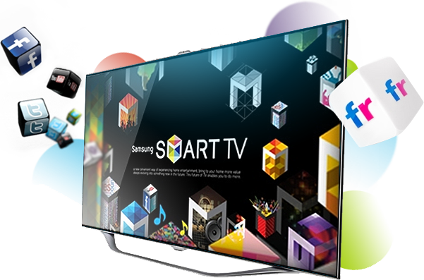

Specifications of Vu 42D6455 107 cm (42) LED TV (Ultra HD (4K), Smart)
Technical Details
GENERAL
Motion Sensor Yes
Brand LG
Display Size 106 cm (42)
Smart TV Yes
Wi-Fi Type Built-in Wi-Fi
USB 3
HD Technology & Resolution Full HD, 1920 x 1080
Model Name 42LB5820
3D No
Built In Wi-Fi Yes
Screen Type LED
HDMI 3
Launch Year 2014
DIMENSIONS
Width x Height x Depth (with stand) 961 mm x 610 mm x 218 mm
Weight (without stand) 9.2 kg
Width x Height x Depth (without stand) 961 mm x 567 mm x 55.5 mm
Weight (with stand) 9.5 kg
VIDEO FEATURES
LED Display Type LED
Aspect Ratio 16:09
View Angle 178° Degree
Brightness 400 cd/m²
Other Video Features
• 6.5 ms Response Time
• Active Display Area (Horiz x Vert): 919.29 (mm) x 517.10 (mm)
• Movies Support in USB Mode
• 1.06 Billion Colors
Analog TV Reception PAL-SECAM-DK, A2
Refresh Rate 60 Hz
Price: Rs. 17,590.00